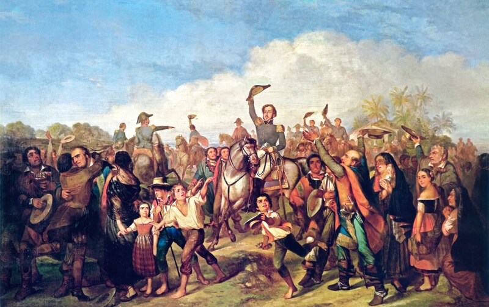

"A Proclamação da Independência do Brasil" por François René Moreaux, todo conjunto remete mais à imaginação do que à realidade o que, aliás, é característico da arte romântica, em voga na época. Uma cena idealizada que mostra um príncipe aclamado pelo seu povo e cavalgando entre a massa popular branca e europeizada.

"A Coroação de D. Pedro I" por Jean-Baptiste Debret.
Em 1º de dezembro de 1822 ocorreu a sagração e coroação do Imperador. A cerimônia reuniu características francesas e germânicas, como o corte do ar por espadas

Retrato de D. Pedro I por Simplício Rodrigues
Dom Pedro I, desempenhou um papel crucial na consolidação da independência do Brasil e na construção das bases do novo país. Sua liderança e decisão de proclamar a independência contribuíram significativamente para a formação da nação brasileira.
Retrato de José Bonifácio por Benedito Calixto.
José Bonifácio desempenhou um papel crucial na independência do Brasil. Ele aconselhou Dom Pedro I e, em 7 de setembro de 1822, estava presente quando Dom Pedro proclamou a independência do Brasil às margens do rio Ipiranga.
Maria Leopoldina, esposa de Dom Pedro I, desempenhou um papel diplomático crucial na busca de apoio internacional para a independência do Brasil. Ela também era regente do Brasil durante as viagens de Dom Pedro I à província de São Paulo.
...